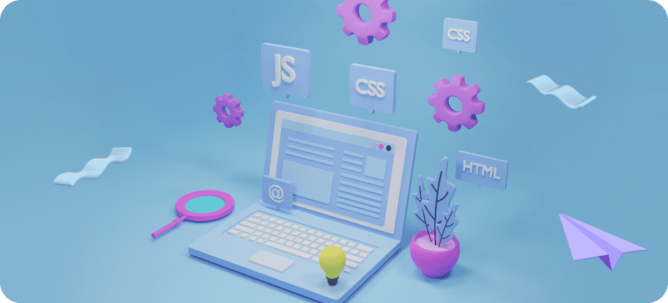
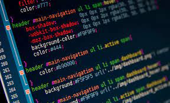
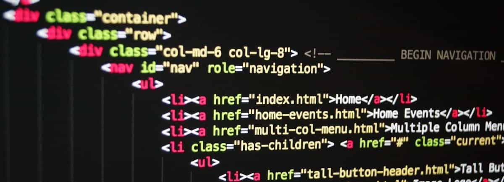
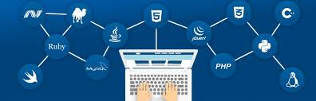

Qué es el desarrollo web
Se conoce como desarrollo web al proceso de crear y mantener un sitio web que sea funcional en internet, a través de diferentes lenguajes de programación, según el modelo y la parte de la página que corresponda. Cada sitio tiene una URL única que lo distingue de los demás en la red informática mundial. Un sitio web puede clasificarse de diferentes formas. Para cuestiones de desarrollo web principalmente se divide en dos partes. Frontend. Es la parte que interactúa con el usuario, tanto en imagen como en función. Por ello está íntimamente relacionada con la experiencia del usuario (UX) y la interfaz de usuario (IU). Backend. Se refiere a la parte que está en contacto directo con el servidor; es donde se aplica el código de programación para crear la estructura. Permanece en un segundo plano a cargo de la accesibilidad, actualización, bases de datos y cambios del sitio.
Diferencia entre diseño y desarrollo web
Una vez definido el frontend y el backend es más sencillo distinguir la diferencia entre ambos conceptos. El diseño web está relacionado con el frontend, pues se encarga de definir la apariencia estética del sitio web. Los diseñadores web se enfocan en crear la apariencia y la experiencia del usuario en el sitio, utilizando una paleta de colores y herramientas como Adobe Photoshop, Sketch o Figma. En específico, se centran en aspectos como la imagen, gama de colores, cómo se verá el contenido, incluyendo texto, videos, fotografías, iconos, botones, menús, barras y demás elementos. Su objetivo es que el sitio sea fácil de entender y usar. Por otro lado, el desarrollo web va de la mano del backend. Se asegura de que el código que sostiene la estructura sea funcional y a su vez lógico. También se hace cargo de la gestión de contenido y la base de datos de la web. Se refiere a la parte técnica de la construcción del sitio web. Los desarrolladores web se enfocan en la codificación y programación del sitio web utilizando lenguajes como HTML, CSS, JavaScript y otros. Su objetivo es que el sitio responda correctamente a las interacciones que realice el usuario en él y concretar un stack tecnológico adecuado. El diseño web corresponde a un sentido visual, ya que define la apariencia de cada una de las páginas que integren un sitio web, desde los iconos hasta imágenes o videos. Por su parte, el desarrollo web funge como un traductor del diseño para configurarlo en un lenguaje que entienda la red. El desarrollo web se enfoca en lo funcional; podrías tener un sitio navegable y útil aunque podría carecer de estética visual; por eso es tan importante que estas dos actividades se conjuguen.
9 etapas del desarrollo web
1. Define el perfil del proyecto
Para iniciar un sitio web lo primero es establecer las bases de lo que se requiere; es decir, definir cuál será el objetivo del proyecto, a quiénes va dirigido, para qué es necesario en el negocio o la empresa, qué se podrá hacer o consultar, cuál es la personalidad de la marca que se quiere mostrar, entre otros aspectos esenciales.
2. Planifica el trabajo
En este momento debes recopilar toda la información necesaria para definir cada una de las etapas del proyecto. Involucra la investigación de mercado, el análisis de la competencia y el estudio de los consumidores. A partir de ello decide cuál es la estrategia de contenido y la estructura del sitio web más adecuadas para el propósito del proyecto.3. Diseña el sitio web
Esta etapa corresponde a la organización y acomodo de los elementos que van a componer cada una de las páginas del sitio, es decir, el diseño web. Con la participación del cliente y atendiendo a la voz de marca, hay que seleccionar los colores que se usarán; la posición del logotipo; el favicon, el tipo de letra para barras, títulos, menús y cuerpos de texto; las imágenes y videos; la versión móvil y para otros dispositivos, y las principales interacciones que tendrá el sitio.4. Determina los contenidos
Es importante definir los contenidos del sitio web, considerando aspectos SEO para todo lo relacionado con banners, bloques de información y los textos de cada una de las secciones. Este trabajo se relaciona estrechamente con el punto anterior, ya que el diseño y los contenidos se conjugan para que sea funcional.
5. Desarrolla el código
Al tener en cuenta lo anterior, es momento para traducirlo a un lenguaje de programación y frameworks. Inicia con el wireframe o esquema de las páginas del sitio para adaptarlo. En este punto también se determinan las funcionalidades que tendrá el sitio, la configuración del SEO, la base de datos, la velocidad de carga y rendimiento, las pruebas del código, la ciberseguridad, entre otros aspectos relacionados. Recuerda que puedes usar recursos como React.6. Revisa y comprueba el funcionamiento del sitio
Hoy se utilizan diversos elementos para hacer pruebas al código como un sandbox. Cuando ya se ha generado la programación debe hacerse una revisión exhaustiva del funcionamiento del sitio web, atendiendo a lo que se esquematizó en el diseño, y corroborar que los contenidos estén correctos y operen adecuadamente.7. Sube el sitio web
Cuando ya verificaste la programación del sitio y ya se ha comprobado su funcionamiento, diseño y contenidos es momento de lanzar la página web, es decir, ponerla en marcha en la red.Entrega los archivos para que sean publicados en el servidor elegido por el cliente. Luego de ello, los internautas ya podrán acceder al sitio oficialmente. Si es una web de negocios es de suma importancia que agregues un software de analítica para obtener las métricas e informes del comportamiento de los usuarios; sobre todo para acciones de compra, relleno de formularios, chats, etc.

8. Evalúa y optimiza
Analiza cómo está funcionando el sitio web una vez que ya está en la red, verifica áreas de mejora y trata de optimizar todo lo que puedas en cualquier nivel: ya sea en el backend o en el frontend. Incluso esta evaluación te sirve para identificar aspectos de diseño o contenidos que se pueden mejorar.9. Haz un mantenimiento continuo
Es una de las acciones vitales, pues de esto depende la permanencia de un sitio en internet. Si no atiendes los errores en el sitio que puedan surgir, es posible que muchos usuarios ya no regresen por la mala experiencia de navegación. Mantente al tanto del funcionamiento óptimo de todas las páginas de la aplicación web.¿Por qué estudiar desarrollo web?
Al comienzo de cualquier proceso de aprendizaje, muchos de nosotros nos hemos preguntado las razones por las que estudiar un aspecto en específico. Este es uno de los casos del desarrollo web y de todo lo que se relaciona a él. Por eso, si aún tiene muchas dudas acerca de este campo, pero quieres animarte a hacerlo, estas 5 razones de por qué estudiar desarrollo web te ayudarán a decidirte. 
La demanda de desarrolladores web va en aumento
En primer lugar, es importante que tengas claro que la demanda de desarrolladores web está creciendo, ya que, en muchas compañías actuales alrededor de mundo, necesitan un desarrollador web. Este se encargará de hacer de un diseño web una realidad, con elementos de seguridad, de comunicación o navegación, entre otros. Por eso, si al terminar tu proceso de aprendizaje estás preocupado por conseguir empleo, te aseguramos que este miedo desaparecerá en un par de semanas, pues las oportunidades te lloverán. No te pierdas este post si quieres saber más sobre las vacantes del sector tecnológico en España.Diversidad de oportunidades
De la mano de la razón anterior, estudiar desarrollo web te permite encontrarte con un montón de oportunidades diferentes entre ellas. Es decir, no siempre las vacantes están enfocadas en obtener una persona que lleve a cabo todo el proceso de desarrollo. Más bien, podrás encontrar oportunidades en las que solo deberás participar en una de las etapas de desarrollo, lo que te brinda la opción de escoger.
Buena remuneración
Por otro lado, tenemos uno de los aspectos más interesantes para las personas que se quieren atrever a estudiar cualquier campo de la programación, en este caso, el desarrollo web. Esta característica es la buena y diversa remuneración que ofrece cualquier vacante que esté buscando un desarrollador web. Ya que es un trabajo complejo y a veces no hay la oferta necesaria, las empresas deciden ofrecer una remuneración justa por el trabajo que realicen. Posibilidad de ser creativos
Un desarrollador siempre debe ser creativo, por lo que puedas dejar correr todos tus conocimientos e ideas innovadores sobre uno o varias etapas de un proyecto de código. Aunque muchas veces es un trabajo en equipo, siempre tendrás la oportunidad de dejar una marca personal en el programa que estés realizando y sí, desde la etapa de la escritura de código. Trabaja desde cualquier lugar
Además, uno de los aspectos más interesantes es que puedes trabajar desde cualquier lugar. El trabajo remoto es extenso y muy posible de encontrar, por lo que puedas trabajar desde la sala de tu casa, desde un espacio de coworking, desde un café o desde un avión. El teletrabajo se ha popularizado en la mayoría de sectores a raíz de la pandemia, pero el mundo IT continúa siendo uno de los mercados laborales en los que está más implementado.